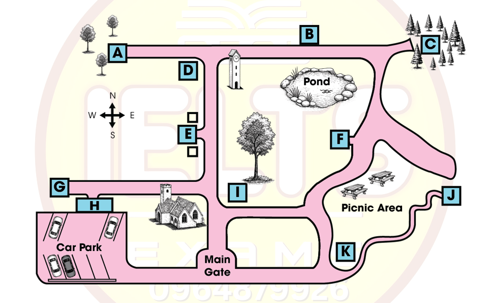

Phiếu trả lời Listening
Bấm số câu để nhảy tới câu đó. Bài làm được tự lưu trên máy này. Thời gian thi thật: khoảng 30 phút.
PART 1 Questions 1–10
Complete the notes below.
Write ONE WORD AND/OR A NUMBER for each answer.
How to become a tea taster
What the training involves
A trainee tea taster mainly works in the company's
He/she learns how to:
taste the tea using a
give a to samples of tea according to their quality
select the right size of leaves for teabags
remember the of different kinds of tea.
He/she only qualifies after of training.
What the tea company is looking for in new staff
a degree ( is an advantage)
able to do quickly
ability to distinguish different kinds of accurately
effective skills in different situations
being prepared to
📜 Lời thoại Part 1
You will hear a student at a job fair talking to a man who works as a professional tea taster. First you have some time to look at questions 1 to 5. Now listen carefully and answer questions 1 to 5. Hello, can I help you? Hi, I'm still a student but I've done a bit of research into the tea company you work for and I have a few questions about the tea tasters jobs you have advertised.
Well, that's actually what I do.
Would you like me to tell you a bit about what it's like being a trainee tea taster? Yes, please. Well, initially, even though there's some time spent in meetings at our office, a trainee is based in our lab for most of their time being trained how to do the tasting. Right.
How do you actually learn how to taste tea? Do you use a special kind of cup? No, rather than that or even a glass to do the tasting, we sip it from a spoon. Ah, OK. And what other kind of things will I need to learn?
Well, there are many different qualities of tea, so one of the most important things is to learn how to decide which grade should be assigned to each sample.
That's a very important part of the job. Yes, I can see why. And then another important thing to learn is how to choose the right leaf for tea bags.
Shape isn't nearly as important as the size in that case. Gosh, I'd never really thought about what goes into a tea bag. So do all of the teas have their own name? Yes, that's another important part of the training.
It took me ages before I remembered them all. I can imagine. So how long before I qualify? I heard it was seven years, is that right? Well, it used to be, but we've speeded things up a bit, so now it only takes five.
That's two years less than before, which is quite significant, really. Right, I see. Before you hear the rest of the conversation, you have some time to look at questions six to ten.
Now listen and answer questions six to ten. The job sounds really interesting, but what I'd like to know before applying is what kind of person you're looking for. That way I can see whether I'll be a good fit.
Well, you need to have a degree. Well, that's fine. I'm just finishing mine.
However, it doesn't have to be a science degree, even though that's a definite bonus. My degree was in history, for example. I'm studying languages.
Yes, that'll be fine. Is there anything else? Yes, you need to be able to do maths and do it fast. A lot of the job is to do with the price of tea, so that's really important.
OK, that makes sense. And this might seem unusual, but you'll have your sight tested. We're not worried about whether you need glasses or not, that's fine, but you have to see colour accurately.
It's very important when looking at tea leaves. Wow, I'd never have thought about that, but it makes sense. What about other things, like how important is good communication? Essential.
You'll need to be highly skilled at that, as you'll meet such varied people in this job, everyone from farmers to buyers. OK, I've noted that. Anything else I should remember? Yes, I'd say there's no point doing this job if you don't like to travel.
You'll be living out of a suitcase for a while, so if you're not worried about spending time abroad, for example, that'll work in your favour. OK, well, thanks for all the information. You've been so helpful.
That is the end of Part 1. You now have one minute to check your answers to Part 1.
PART 2 Questions 11–20
Questions 11–14
Choose the correct letter, A, B or C.
Pioneer Historical Village
11 When did Pioneer Historical Village open to the public?
12 How much will each adult in the group pay for a ticket?
13 What sort of demonstration will the visitors be able to watch?
14 What kind of experience with animals can visitors have at Pioneer Village?
Questions 15–20
Label the map below.
Write the correct letter, A–K, next to Questions 15–20.

15 Schoolhouse
16 Mill
17 Stables
18 Doctor’s Office
19 Hotel
20 Workshop
📜 Lời thoại Part 2
Part 2 You will hear a guide talking to a group of visitors to Pioneer Historical Village. First you have some time to look at questions 11 to 14. Now listen carefully and answer questions 11 to 14.
Hello, everyone, and welcome to Pioneer Historical Village. It's an outdoor park recreated to look just like a village from the mid-19th century. Visitors can wander through the village, look inside the houses, and get a feel for what life was like back then.
The village has grown somewhat since it was first opened to the public, going back a bit, in 1962 a committee was formed in the hope of preserving some of the local history. Many years of planning and fundraising followed. Volunteers worked throughout the 1970s to restore and move buildings to the site.
In 1980 the village welcomed its first paying visitors. We'll go in now, and I'll help you purchase your tickets. Since there are 10 of you all together in this party, you qualify for the group discount.
The normal price of admission is $16 for adults and $12.50 for students and seniors, but it'll only be $11 per person for all of you today, which is quite a saving. Sometimes we have shows and demonstrations. We had hoped to show you how candles are made, but the person organising it had to cancel at the last minute.
You're all in for a treat of another kind though. Just outside the shop we have an expert sweet maker who will be making lollipops the old-fashioned way, so do go and have a look. If you want to make bread yourself, head to the bakery and have a go.
The space is quite small though, so no spectators please. You'll have a chance to interact with some farm animals today. We used to keep cows in the dairy, but someone had to be here twice a day to milk them, and it became difficult to manage.
Chickens are everywhere though, not just on the farms. Every house kept a few for the eggs. You're welcome to have a look and see if you can find any to collect.
Goats were another favourite animal, but they cause trouble too. They're fun to feed, but they eat everything in sight. The ones that we had have moved to a nearby farm.
Before you hear the rest of the talk, you have some time to look at questions 15 to 20. Now listen and answer questions 15 to 20. Now, you'll probably want some time to explore the village.
Please open your maps and we'll have a look at the layout. We'll enter through the main gate, which is at the bottom of your map. So, if you'd like to see the schoolhouse, that's a good first stop because it's not too far from the gate.
If you head directly north, you'll come to a beautiful old church. The schoolhouse is diagonally across from it. The mill is quite interesting.
That's where they ground wheat to make flour for baking. To find it, go straight up from the main gate until you get to the clock tower. Turn right and it's on the other side of the road, across from the pond.
Then, there are the stables, where the horses were kept. You may have seen the back of the stables already because they're a large building backing onto the car park. If you head west past the church, it's the first building you come to.
Medical care was quite basic in those days. To get an idea of what it was like, you might like to visit the doctor's office. Look in the middle of your maps and it's in a block of three buildings that are all close together.
It's one of them. There's even an old hotel. Go up past the picnic area and the hotel is on the opposite side of the path, near the pond.
Another place to see is the workshop. It's at the end of that narrow winding path just south of the picnic area, which is on the right-hand side of your map, at the eastern end of the village. The village has been here since... That is the end of part two.
You now have 30 seconds to check your answers to part two.
PART 3 Questions 21–30
Questions 21–22
Choose TWO letters, A–E.
21–22 Which TWO things do Annie and Ryan agree are surprising about people's behaviour and attitudes to waste disposal?
Questions 23–24
Choose TWO letters, A–E.
23–24 Which TWO things does Annie think will improve recycling rates in the local area?
Questions 25–30
What advice do Ryan and Annie agree should be given about each of the following types of waste?
Write the correct letter, A–H, next to Questions 25–30.
Types of waste
paint
batteries
some medicines
pesticides
tyres
fridges
Advice
A should be disposed of more regularly
B should have better labelling
C should normally be used up completely
D should be saved for later disposal
E should be made available for others' use
F should be repaired rather than thrown away
G should be further modified to be made less harmful
H should be retained and used for different purposes
📜 Lời thoại Part 3
Part three. You will hear two environmental study students, called Annie and Ryan, discussing with their tutor a presentation they will give on disposing of dangerous household waste products.
First you have some time to look at questions 21 to 24. Now listen carefully and answer questions 21 to 24. Hi, Annie, Ryan, come in.
Morning. I know you want to discuss your project presentation. Start by reminding me what you're focussing on.
We've been looking at a research article on the disposal of hazardous household waste. That includes things like dangerous chemicals we use in the home, but also less obvious items like electrical equipment, which are potentially really polluting as well. The research basically involved interviews, trying to find out what influenced the methods people use to get rid of their dangerous waste.
There were some really surprising results about people's behaviour and attitudes with regard to waste disposal. Yeah. It's no great shock that in general people are much more aware than they used to be, you know, about the effects of these materials on the environment, and about the value of careful disposal, even the smallest, cheapest things.
Yes, but I did think it was surprising that people don't get very enthusiastic about the subject of waste disposal, like they do about other aspects of environmental protection. Me too. Apparently they find it all rather tiresome.
Another striking thing was that many people are more careful when they're using certain hazardous materials. than when they are getting rid of them. At that stage, they simply don't remember that they'll be bad for the environment.
Absolutely. That really amazed us. I can see why.
But were there any positives? Hope for the future? Well, in the conclusions section of the article, they talked about ways to improve recycling rates in the local area. And I think some of the ideas would improve things around here, you know. The article talked about laws in certain countries that certain types of waste have to be disposed of safely or you are taken to court.
I think financial penalties are a good idea, but criminalising people is too harsh. I think it's more effective to impose a penalty on homes if they don't recycle stuff. I still think legislation forcing local councils to increase recycling rates works better.
You can present both ideas. Yeah, and agree to differ. I think encouragement is always better in the long run, and getting the local community involved, such as schools, working with kids.
That way you establish good habits which last throughout their lives. Okay. Before you hear the rest of the discussion, you have some time to look at questions 25 to 30.
Now listen and answer questions 25 to 30. Do you want to talk through your actual presentation? Yes, we thought we'd talk about different types of waste covered in the research and give advice on each one. That's a great idea.
We thought we'd start with paint. Yeah, we'll explain that we advise setting up schemes where you can take it to a centre to be used by people who need it, repainting an elderly person's home, for example, like they do in many parts of the world. Yes, which is a positive note to start on.
And will you discuss batteries? Definitely. They're so small that they're the simplest things to drop in a bin and forget. And I think we should emphasise that people should have a storage container at home where they can put them until they've got enough to take to a central collection facility because they're full of toxic substances.
Medicines are really interesting. I imagine people don't think of them as dangerous. No, indeed.
The point we want to make is that, as a rule, things like antibiotics should not need to be thrown away in the first place because doctors usually tell us we should finish off the whole course of tablets. So there aren't any left to go for waste. Doubly good strategy.
Are you discussing pesticides? Yes. The point we highlight from the article is that people are often unsure what to do with them. And there needs to be clearer information given on the packaging so people are left in no doubt.
We thought we'd also look at tyres. Rather than sending them to the dump, people should be encouraged to be creative with them. Not just sending them away to be recut for retreads, but to make them into things like plant holders for your garden.
Good, yeah. And will you mention any electrical appliances? We've opted to finish with fridges because this is actually a good news story. The fact that we now have the capacity to use less dangerous materials.
And we should continue to exploit that capacity to reduce effects on the ozone layer. Good. Well, that seems... That is the end of Part 3. You now have 30 seconds to check your answers to Part 3.
PART 4 Questions 31–40
Complete the notes below.
Write ONE WORD ONLY for each answer.
Whale Shark Conservation Field Trip
Background
Whale sharks are the world's biggest fish.
Comparison with whales:
Similarities: They're large and they feed on plankton and krill.
Differences: They stay near the and they lack any actual
A large number head to the waters off Ningaloo, Western Australia, each year.
The coral reef, where the whale sharks feed, is unusually close to the
Research centre activities
Existing methods of monitoring whale sharks are imperfect:
tracking devices attached to the whale shark's (these are expensive and unreliable)
from a (this is imprecise)
New research project on whale shark feeding habits:
Analysis of plankton shows different amounts of varieties.
Researchers are comparing plankton data using special maps.
Study on the impact of humans on whale shark behaviour: noise caused whale sharks to
Community outreach programme - The whale shark race:
A mature whale is tagged and assigned to a to follow.
Results are displayed on the research centre website.
Conservation and management
Record any to whale sharks in photo-identification libraries.
Ban scuba activities as whale sharks are affected by the the activities produce.
📜 Lời thoại Part 4
Part 4 You will hear part of a student presentation about a field trip to a whale shark research centre given to fellow marine biology students.
First you have some time to look at questions 31 to 40. Now listen carefully and answer questions 31 to 40. Hi everyone.
I've just returned from my field trip and want to share some of my experiences with you. I learnt a lot about whale sharks on this trip. For example, they're actually the largest species of fish in the world's seas, about the size of a bus.
Despite their massive size, whale sharks are docile animals. Because of the name, you might be confused about whether these animals are whales or sharks. They are in fact sharks, but they do have some things in common with whales.
They're similar in terms of their large size and what they eat. Like many species of whales, their diet consists mainly of plankton and krill, which are tiny plants and animals. Unlike many whale species, they prefer to swim close to the surface of the water rather than cruising the depths of the ocean.
So that's a key difference relating to their habits. Another one relates to their physical make-up. Their skeleton is made entirely of cartilage, in comparison to whales that have skeletons made of real bones.
The place I visited is called Ningaloo in Western Australia. We were there to observe a large group of whale sharks which congregate in that part of the ocean each year between April and July. Ningaloo is ideal for whale sharks because there is a coral reef nearby which ensures an abundant supply of food.
It's great for divers too, because although it's in relatively deep waters, the reef is in close proximity to the shore, unlike some reefs that you have to travel miles to get to. I'd like to move on now to tell you about the Whale Shark Research Centre and the research being conducted there. We know that whale sharks are migratory, but not a lot is known about where they go and why.
The methods currently being used to monitor them could be better. One way is to use an electronic tracking device, or tag, which researchers have to attach manually to the fin. It's not an easy process, and the tags are also quite expensive, so if it falls off, you're in trouble.
Another way of monitoring whale sharks is with a special drone to spot the animals in the ocean. This can give you a rough idea of numbers, but obviously it's not an exact science. The researchers at Ningaloo are involved in a new research project that's currently being carried out to investigate whale shark feeding habits.
They hope to find out more about how far whale sharks travel to feed. They're using an innovative approach to do this, which analyses plankton. Apparently, plankton from different places contains different quantities of carbon types.
The researchers are checking the plankton consumed by the whale shark against maps which have all the different plankton zones marked on them. This comparison allows them to track exactly where the whale shark has been feeding. Some research that I was involved in on my field trip was directly observing the whale shark behaviour.
This was part of a small study being carried out in Ningaloo to find out how whale sharks are affected by human activity. We drifted along in our boat with the engine off, then when a whale shark was nearby, we switched on the engine. We noticed that the resulting noise affected the behaviour of the animal.
As soon as it heard the sound, we saw it dive. This happened on several occasions and was quite obvious. One day, we got to witness the great work they're doing at the centre to educate the community about whale sharks.
At the moment, there's a whale shark race. The researchers select a mature whale shark which has been tagged and they allocate it to a school. The children get to track the journey of their whale shark and see which one travels the furthest.
All the data is on the website. It's clear that these majestic creatures require careful conservation and management. With humans and whale sharks being in close proximity, problems can occur.
While these events may be rare, all injuries which whale sharks suffer must be documented, with information such as date and location and a photograph if possible. The Fisheries Department has agreed to keep these records in their digital image library. Something that is being introduced next year in Ningaloo is a Code of Conduct.
It covers the rules that need to be followed to minimise any distress to the sharks. Scuba diving is not going to be allowed anymore, as previous research has found that whale sharks find bubbles disturbing. Another new rule is that boats... That is the end of Part 4. You now have one minute to check your answers to Part 4.
Phiếu trả lời Reading
Bấm số câu để nhảy tới câu đó. Bài làm được tự lưu trên máy này. Thời gian thi thật: 60 phút.
READING PASSAGE 1 Questions 1–13
You should spend about 20 minutes on Questions 1–13, which are based on Reading Passage 1.
The origins of tennis
The game of tennis has a very long history. It is officially still known as ‘lawn tennis,’ partly because it was originally only played on grass, and also to distinguish it from the older game known as ‘real tennis,’ from which the modern game developed.
Some people believe that the ancient Egyptians, Greeks, and Romans played various versions of tennis. No drawings or descriptions of any tennis-like games have been discovered, but a couple of Arabic words dating from ancient Egyptian times are cited as evidence. The theory goes that the name ‘tennis’ is derived from the Egyptian town of Tennis alongside the Nile, and the word ‘racquet’ evolved from the Arabic word for the palm of the hand, rahat.
Aside from these two Arabic words, there is no other evidence for any form of tennis prior to the year 1000. Most historians believe the origins of the game date back to 11th- and 12th-century France. It's thought that French monks were the first to play a basic game of handball against their monastery buildings, or over a rope strung across a courtyard. Those who dispute more ancient origins argue that the name ‘tennis’ is derived from the French tenez, which meant something to the effect of ‘take this,’ said as one player would serve to the other.
This game took on the name jeu de paume, which means "game of the hand or palm." But as they found playing with bare hands quite uncomfortable, players began using a simple glove, and later either a glove with webbing between the fingers or a solid paddle, similar to the ones used in table tennis today. Wooden racquets were not invented until much later.
The French nobility learned the game from the monks, and some accounts report as many as 1,800 tennis courts in France by the 13th century. The game, which remained exclusive to the upper classes, gained more popularity over the 14th and 15th centuries. As it became increasingly fashionable, outdoor courtyards were modified into indoor courts. The game became such a widespread diversion among the aristocracy that both the pope and the French king tried to ban it. By the 16th century, the game had spread to England, where it became known as ‘tennis.’ Both kings Henry VII and Henry VIII were avid players who promoted the building of courts, and it also became a very fashionable game among the English upper classes.
An example of one of these early ‘real tennis’ courts can be seen at the royal palace of Hampton Court near London. It was built in 1525 and is still used today. Only a handful of such courts remain. It is a tall, narrow indoor court, bearing more resemblance to a squash court than the type of tennis courts we are familiar with today. ‘Real tennis’ is a remarkably fast and difficult game as the ball can be bounced off any of the surfaces, some of which are slanted at odd angles. The net is just over 1.5 metres high at each end, but drops to just under a metre in the middle.
Until the 19th century, the ball was either constructed from a wad of hair, wool, or cork wrapped in string and cloth or leather. Then a major development took place when Charles Goodyear invented vulcanisation, a process that allows rubber to withstand heat and cold. This led to the development of rubber tennis balls. During the 1850s, players began to experiment with these new balls, which bounced easily on outdoor grass courts.
In 1874 a Welshman, Major Walter C. Wingfield, known as ‘the father of lawn tennis,’ had the idea of devising rules, which he published. He also introduced standardised equipment, including racquets, balls, posts, and a net, which he patented and sold in sets. The game quickly became a very popular and sociable open-air pursuit for the English middle classes. People also started playing tennis in countries such as the United States, Russia, India, Canada, and China.
However, not all of Wingfield’s ideas ultimately survived. Inspired by his knowledge of Greek, he called his version of tennis Sphairistike — a name which never caught on. Interestingly, his original court had the shape of an hourglass, with the net across its narrowest section.
A major tennis tournament took place for the first time in Wimbledon, London in 1877, and its organising committee came up with a rectangular court and a modified set of rules that are essentially the same as for the game we know today. The net was still high at the sides, a carryover from the game's indoor ancestor. But by 1882, the specifications for the size of the court, the equipment, and the rules had evolved to their current form.
Questions 1–6
Choose TRUE if the statement agrees with the information given in the text, choose FALSE if the statement contradicts the information, or choose NOT GIVEN if there is no information on this.
1 There are a few surviving documents which show that a game similar to tennis was played in the ancient world.
2 An early form of tennis involved players hitting a ball with just their hand.
3 The game of table tennis developed around the same time as tennis.
4 Tennis became popular with all sections of French society in the 14th and 15th centuries.
5 The indoor courts created in the 14th and 15th centuries were larger than the outdoor courtyards.
6 There were attempts to prevent French aristocrats from playing tennis.
Questions 7–13
Complete the notes below.
Write ONE WORD ONLY from the passage for each answer.
The development of tennis in England
‘Real tennis’ court at Hampton Court
The ball may be hit against the around the court
The is lower in the centre
1850s
- Balls made out of started to be used
1874
Major Walter C. Wingfield
Published written for the game
Produced complete sets of tennis for sale
Introduced a name for the game which was never adopted
Designed an unusual for the court
1877
- The first large was held
READING PASSAGE 2 Questions 14–26
You should spend about 20 minutes on Questions 14–26, which are based on Reading Passage 2.
John Ray and the Study of Plants
A The 17th-century English scholar and botanist John Ray was well aware that he lived through, and participated in, a profound revolution in the way people interacted with nature. In the preface to his Synopsis of British Plants, published in 1690, he gave thanks that he had been born at a time when traditional dependence on the teaching of the Greek philosopher Aristotle (384–322 BCE) had given way to a new philosophy, based on experiment and observation of the real world, that we now call science.
B Ray was born in 1627. His father was a village blacksmith, and his mother was also a respected member of the community, a healer who was an expert in folk medicine and the use of herbs to treat ailments. Ray must have stood out as an unusually bright boy among his schoolmates, and his talents were recognised by a church official, Samuel Covell, who had graduated from Cambridge University in 1600, and maintained his links with his university. Through his influence, Ray was admitted to Cambridge University in 1644 at the age of seventeen – a huge step for a village blacksmith’s son. There he made a solid start, and quickly gained a reputation as a brilliant student. He studied the classics (Greek, Latin and Hebrew) and mathematics, but there was nothing yet we would now call science in the curriculum. After graduating in 1648, he became a minor member of staff at Trinity College, Cambridge. He was appointed Lecturer in Greek in 1651, Lecturer in Mathematics in 1653, and Lecturer in Humanities in 1655.
C Almost immediately after graduating, Ray also seems to have developed the interest to which he would devote the rest of his life: the study of the natural world. He explains this conversion into a naturalist – in particular into a botanist – in the preface to his first book, the Cambridge Catalogue of English Plants. Here Ray tells us that he suffered an illness in his early twenties, and was advised to take long walks and ride in the fresh air while recovering. While doing this, he became interested in the local flora, and finding nobody able to teach him, Ray investigated it for himself. He then went on to pass on the knowledge he acquired to others.
D By the mid-1650s, even the first-year students at Trinity College were able to identify the plants and flowers around Cambridge, as they were being taught (unofficially – none of this was part of their formal education) by Ray. Many of them were the sons of landowners, and so had a natural, if amateurish, interest in country matters. But a few of them took his efforts to understand the natural world much more seriously. One of these, Francis Willughby, later played an important part in Ray’s life.
E Having himself had no authority on the subject of plants on which to draw, Ray also started work on what would become his Cambridge Catalogue of English Plants. The work was not published until 1660 because, as Ray explained in the preface, he had to start from scratch:
“I had first to become familiar with the literature, to compare the plants that I found with the pictures, and when there seemed to be a resemblance, to go fully into any unknown descriptions. Gaining skill by experience, I acquired at last the ability to recognise to what tribe and family similars or could be assigned; this taught me to search for similarities and saved a vast deal of labour, which others would have spent in their difficulties. I was eager to make the most of this and was fortunate to share my enthusiasm with my friends …”
F Ray’s Cambridge Catalogue of English Plants was much more than a simple list of species. It gave the names of plants found in the area around Cambridge and included information about where they grew and how common they were. In doing this, Ray was producing something that would be of practical use to students and other readers interested in the local natural world. At the same time, the book showed his determination to describe plants accurately, on the basis of direct examination rather than reliance on old authorities. In this respect, it reflected the spirit of the new learning that Ray admired.
G Ray’s studies of plants were only the beginning of a much larger ambition. With the support of Francis Willughby, he began to imagine a more comprehensive investigation of nature, one that would attempt to classify living things according to careful observation of their shared characteristics. This was an ambitious undertaking, especially at a time when many aspects of the natural world remained poorly described. Yet Ray believed that by collecting evidence systematically and comparing related forms, it would be possible to build a more reliable understanding of nature than scholars had possessed before.
Questions 14–20
Reading Passage 2 has seven paragraphs.
Choose the correct heading for each paragraph from the list of headings below, i–ix.
List of Headings
i Ray’s account of his working methods
ii The botanical expert who inspired Ray
iii A succession of academic achievements
iv Ray’s informal tuition
v Ray’s appreciation of his contemporary academic culture
vi A childhood interest in plant
vii Plans for a bold new project
viii A description of the content of Ray’s first book
ix (đề gốc bị thiếu nội dung tiêu đề này)
14 Paragraph A
15 Paragraph B
16 Paragraph C
17 Paragraph D
18 Paragraph E
19 Paragraph F
20 Paragraph G
Questions 21–24
Complete the summary below.
Write ONE WORD ONLY from the passage for each answer.
A New Approach to Knowledge
John Ray was a scholar and self-taught botanist, whose work reflected the that was taking place during the 17th century in people’s way of thinking about the natural world. This new approach is the basis of the modern field of It represented a complete break from the ideas of Aristotle, which had dominated thinking up until that time.
As Ray himself explained, his interest in plants was aroused after graduating, when he had to spend time outdoors after a period of He taught himself, in addition to many Cambridge , and began compiling his catalogue of plants, which was published in 1660.
Questions 25–26
Choose TWO letters, A–E.
25–26 Which TWO of the following statements are true of Ray’s early life?
READING PASSAGE 3 Questions 27–40
You should spend about 20 minutes on Questions 27–40, which are based on Reading Passage 3.
Sir Francis Ronalds 1788 – 1873
An early pioneer in the story of long-distance communication
A Francis Ronalds was born in London in 1788, the second of eleven children. When he was nineteen his father died, and as the eldest son, the young Ronalds had to assume the responsibility of running the family's cheese business. He combined this occupation with his passions for chemical experiments and for meteorology, the study of the Earth's atmosphere and its changes. This brought him into contact with the elderly Swiss meteorologist Jean Andre de Luc, who was also an inspired inventor in the field of electricity. In 1814, de Luc encouraged Ronalds to start work on this new discipline.
B For the next few years, Ronalds experimented enthusiastically with various kinds of electrostatic clockwork devices. He was particularly interested in the idea of electric telegraphy: transmitting messages over distance, using electrical impulses carried along metal wires. In the best traditions of nineteenth- century scientists, these investigations were carried out at home. In early 1816, Ronalds gutted the family home in Hammersmith, West London, and covered its rooms, halls, and staircases with electric wire. This experiment involved the use of current to produce movement in small corks at the ends of circuits.
C Some months later, Ronalds built two large wooden frames accommodating 8 miles (12.9 km) ofelectrically charged iron wire in his back garden. At either end of the wire was a revolving disc, on which letters and numbers were engraved. These dials were kept revolving by means of a clockwork mechanism. When somebody wanted to send a message, he would wait until the dial at his end was showing the desired number or letter, and then interrupt the charge on the wire. This would cause two balls suspended on the wire to fall together. The person at the opposite end would then note down what was indicated by the dial at his end at the moment when the balls made contact. Ronalds soon developed a modified version of his invention in which the wire was encased in glass tubes and buried in the ground. The system was slow and depended on the two dials staying in step, but it worked.
D Ronalds immediately contacted the Admiralty, the department of the British government which had control over the nation's naval affairs. He was not the first to propose a system of this nature to them. Some ten years earlier, in 1806, the inventor Ralph Wedgwood had offered the Admiralty a similar type of telegraph based on frictional electricity, which it had rejected. The Admiralty had its home in London, whereas its naval fleets were based over 130 km away in Portsmouth. With communication between these two cities in mind, Ronalds wrote to Lord Melville, the then First Lord of the Admiralty, to offer him his telegraphic system.
E Ronalds believed that his invention was capable of carrying messages some 800 km, and in his letter to Lord Melville written on 11 July 1816 he spoke of the 'mode of conveying telegraphic intelligence with great rapidity, accuracy, and certainty, in all states of the atmosphere, either at night or in the day, and at small expense.' In 1816, the Admiralty had at its disposal only the late eighteenth-century telegraphic system of semaphore, whereby a mechanical device was used to control a mast with two arms. The disadvantage of this system was that it was only usable in daylight and in clear weather conditions. Nevertheless, John Barrow, Secretary to the Admiralty, wrote back to Ronalds on 5 August, saying that 'telegraphs of any kind are wholly unnecessary, and NO other than the one now in use will be adopted.'
F Ronalds did not pursue the matter further or attempt to patent his telegraph. However, in a smallpamphlet published in 1823, he described his invention and listed some of its potential uses: 'Why should not government govern at Portsmouth almost as promptly as in Downing Street? Why should our defaulters escape by default of our foggy climate? Let us have Electrical Conversazione offices communicating with each other all over the kingdom if we can.'
Although Ronalds lived long enough to see his prophecies come to fruition, he made NO further contribution to the progress of telegraphic communication. In 1843, he was appointed the first Honorary Director and Superintendent of the Observatory at Kew, where he devised an accurate, automatic system for registering meteorological data using photography. A similar system was developed independently by Charles Brooke, but the British Association of Meteorologists confirmed Ronalds's priority. His system remained in use for many decades.
G Meanwhile, the people who benefited most directly from Ronalds's telegraphic work were the physicist Charles Wheatstone and his business partner William Cooke. They saw the potential of a rapid communication system for the growing number of private railway companies, and in 1837 they developed the Wheatstone-Cooke five-needle telegraph. The pair patented their design in the same year, the first of its kind to be officially registered, and reaped considerable financial gain as a result. Ronalds himself retired in 1852 and devoted his later years to collecting and cataloguing a vast library of published material on electricity and magnetism. In 1870, three years before he died, he was knighted by Queen Victoria, a belated honour in recognition of his 'early and remarkable labours in telegraphic investigations.'
Questions 27–31
Look at the following events (Questions 27–31) and the list of dates below.
Match each event with the correct date, A–H.
Write the correct letter, A–H, next to Questions 27–31.
List of Dates
A 1806
B 1814
C 1816
D 1823
E 1837
F 1843
G 1852
H 1870
27 The first electric telegraph system was submitted to the Admiralty.
28 Ronalds received official recognition of his contribution to telegraphy.
29 The first electric telegraph was patented.
30 Ronalds began to experiment with electricity.
31 Ronalds informed the public about the possible uses of his telegraph.
Questions 32–35
Answer the questions below.
Write NO MORE THAN THREE WORDS AND/OR A NUMBER from the passage for each answer.
32 What was marked on the dials on Ronalds's garden telegraph?
33 What did Ronalds use to enclose the wires on his later version of the garden telegraph?
34 How far did Ronalds believe his telegraph could transmit information?
35 What did the communication system invented by Ralph Wedgwood use?
Questions 36–40
Reading Passage 3 has seven paragraphs, A-G.
Which paragraph contains the following information?
Write the correct letter, A–G, next to Questions 36–40.
36 a description of a commercial application for the electric telegraph
37 a rejection of Ronalds's invention
38 a drawback of Ronalds's invention
39 reference to the positive influence on Ronald of a fellow scientist
40 reference to the adoption of one of Ronalds's procedures in preference to that of another scientist